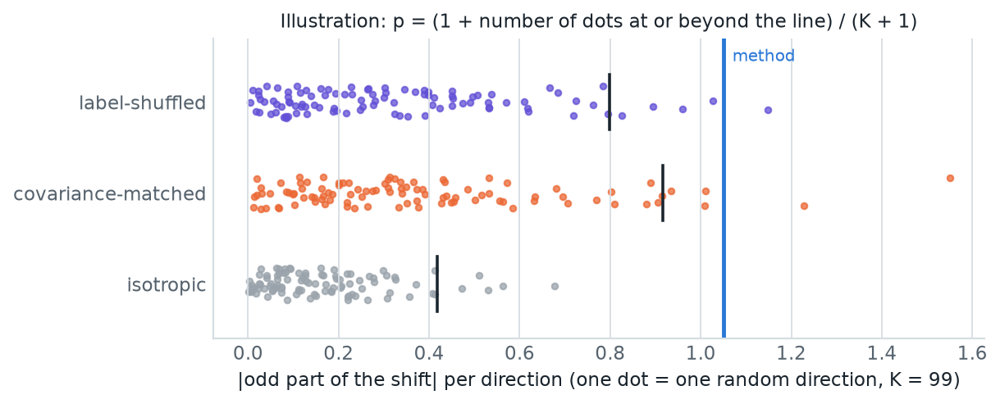
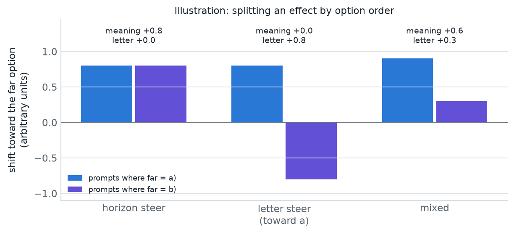
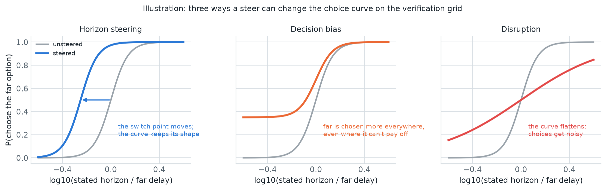
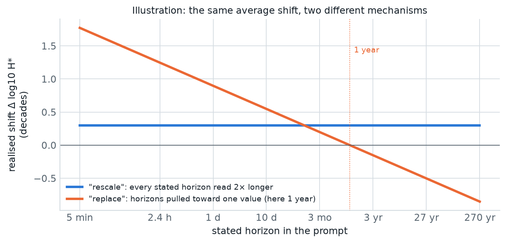

An evaluation pipeline for horizon steering
The extraction team turns the prompt bank and the model's activations into steering methods. This page proposes how the evaluation team checks each one: whether it really steers the planning horizon, and how well. It covers what information about a method is useful, what the two teams need to agree on, the standard random baselines and comparison methods, and a set of checks aimed at the confounds specific to our prompts.
The pipeline on one screen
Known techniques we adopt
- Several random-null families, not one: isotropic, covariance-matched, in-subspace, label-shuffled, concept controls, damage-matched (§06).
- Enough draws and an exact rank test (§06).
- Bounds on every effect: no edit, prompt rewrite, donor patch, plain prompting (§07).
- Standard comparison methods that can aim at a horizon (§07).
- Freeze before testing; hold out horizons as well as prompts (§05).
Checks built for our prompts
- C1 letter vs meaning · C2 decision vs horizon · C3 reward sensitivity · C4 disruption
- C5 surface form · C6 rescale vs replace · C7 the stated horizon · C8 calibration
Two kinds of decisions
- With the extraction team: what is shared about each method, the edit hook for generation, data splits, who freezes settings (§04.1).
- Evaluation's own: pass rules, nulls, statistics, readouts, report format, implementation (§04.2).
What the pipeline is for, and why it needs designing now
The question
The project asks whether the planning horizon a model acts on can be read from its activations and steered, made more myopic or more long-term [spec, Hypotheses]. Prior work found the horizon forms an ordered, curved structure in activation space for single decisions [R4]. The extraction team (steering/) builds steering methods from the prompt bank: so far a linear direction (CAA) and a manifold curve, with random and reward-contrast controls.
The two questions we answer
Does it steer the horizon? Does it change answers the way a different horizon would, more than a matched random edit would, and not through some other variable? How well? How large is the effect, does it land where it was aimed, and what does it cost in answer quality? This is roadmap step 2, reused in steps 3–5 [spec A.6].
Why now
The team's earlier steering runs list as "not decided and blocking" what counts as success for a steering vector, the number of random draws, seeds and multiple comparisons (jared/pipeline/s2_steering/DECISIONS.md, line 24). Random controls have also looked as good as real methods: in the E15 scan, random cells averaged 2.9 flipped labels against 2.5 for the manifold step (same file, line 144).
Citation style: [R3] is reference 3 in §12; [spec A.4] is section A.4 of the experiment spec (jared/pipeline/EXPERIMENT_SPEC.md); file paths point into this repository.
Every term and acronym used below
Prompts and data
- T0 bank
- 700 templated two-option investment prompts (
prompt_bank/). Each states a horizon H in a CONSTRAINT line ("…for this time horizon: 8 years."). Realistic tiers T1–T3 come later [spec A.2]. - Near / far option
- The sooner, smaller payout and the later, larger one. D = the far option's delay.
- H/D, regime
- Stated horizon over far delay. The regime says which options pay off within H:
none,near_only,both, ornull(no horizon) [spec A.1]. - Verification grid
- 100 held-out items near the boundary where the correct answer flips (H/D 0.35–2.8), each in both option orders; never used for fitting.
- Option order, label style
- Whether near is listed first; labels
a)/b)or1)/2). Randomised in the bank. - Unit rewrite
- The same duration in another unit ("100 weeks" for "23 months").
- Null-control prompt
- The same prompt with the CONSTRAINT line removed.
Model internals
- Residual stream, activation, h
- The vector one layer passes to the next, one per token; thousands of numbers wide.
- Layer L
- The residual stream after block L, counting from 1. Headline: layer 38 of 60 on Gemma 4 31B [spec A.3].
- Site, position
- Which tokens are read or edited.
label= the token of the model's own answer label ("I choose: b)"). - Typical norm
- Mean length of activations at a layer and site; strengths are fractions of it.
- bf16
- The 16-bit number format models run in; about 3 significant digits.
- PCA, PC
- Principal component analysis; a PC is a direction along which a set of vectors varies most.
- Per-horizon means
- Average activation of all prompts stating the same horizon (48 horizons, 30 s to 500 y).
- Manifold curve, t̂
- A smooth curve through the per-horizon means in their top 3–8 PCs, indexed by log-time; t̂ is the curve point nearest to an activation.
Steering methods
- CAA
- Contrastive activation addition: add a fixed direction, the mean of one class minus another [R1]. Here long-horizon (H/D ≥ 4) minus short-horizon (H/D ≤ 1/4) prompts.
- Curve slide
- Move along the manifold curve by Δ decades.
snapreplaces the subspace part with the point at t̂ + Δ;displaceadds c(t̂ + Δ) − c(t̂). - Reward-contrast direction
- CAA built from reward size instead of horizon; a control.
- Donor patching
- Run the same prompt with another horizon (the donor), copy its activations at a site, paste them into the original run.
- Centroid substitution
- h − μsource + μtarget, with μ the per-horizon means [R21].
- Spline replacement
- Replace the subspace coordinates with a point on a spline through the means [R13].
- Mean-AcT, Linear-AcT, MiMiC
- Activation transport: map one class's activations onto another's by a per-dimension shift (Mean), shift and scale (Linear) [R15], or by matching mean and covariance (MiMiC) [R16].
- Slerp
- Spherical steering: rotate h toward a target direction, keeping its length [R17].
- DAS, ReFT
- Distributed alignment search: learn a small subspace where swapping in a donor's coordinates reproduces the donor [R18]. ReFT: trained low-rank edits [R19].
- Push vs targeting
- A push method has a strength knob ("more long-term"); a targeting method takes a requested horizon or shift.
Measurement
- Switch point s, Δ log H*
- The H/D where the choice flips from near to far. Acted-on horizon H* = H/s; the effect is Δ log H* = −Δ log s, in decades [spec A.4].
- αk
- The strength at which the model acts on a horizon k times longer (default 2) [spec A.4].
- S/R
- Transfer efficiency: shift from steering at αk over shift from rewriting the prompt with a k× longer horizon [spec A.5].
- Replay readout
- Feed the model its own unsteered answer, with the edit applied, and read the two labels' probabilities at the answer slot. One forward pass.
- Odd / even part
- For edits at +x and −x: odd = half the difference (steering), even = half the sum (disruption).
- Null family, K, rank p
- A set of random edits the method must beat; K = number of draws; p = (1 + b)/(1 + K), b = draws at least as large [R8].
- KL divergence
- How much the model's next-token probabilities change.
- Health, LLM judge
- Coherence, refusal, format failure, truncation [spec A.5]; coherence is graded by another model validated on hand labels.
What each piece of information makes possible
The pipeline should evaluate methods it didn't build. Rather than require a fixed package per method, here are the pieces of information that matter, why, and what each one unlocks. The more the extraction team can share for a method, the more controls can run; the report card records which ran and which couldn't.
Why: nothing can be evaluated without it. steering/ has numpy reference edits, but applying them inside the model during generation is "not here yet" (steering/README.md). Unlocks: every readout, the isotropic and damage-matched nulls, the ± split, all output-based checks. Example: CAA = "add strength × typical_norm × caa at every position of layer 38"; the curve slide = Manifold.steer(mode, Δ).
Layer index, positions, strength units, sign, and for targeting methods the unit of the request (decades). Why: random controls must match the method's size token by token, at the same layer and positions. Unlocks: matched nulls, comparable numbers across methods. Example: steering/ already fixes these.
Which prompts, labels and classes were used. Why: to keep evaluation prompts out of fitting, and because class composition creates confounds: CAA's long class is only both prompts, its short class only none and near_only (steering/README.md, choice 2). Unlocks: split hygiene, per-class order and label balance (C1, C2). Example: fit.json, per_horizon.jsonl.
A function that refits the method on given prompts and labels. Why: several controls are "the same method, fitted differently". Unlocks: label-shuffled null (N4), held-out-horizon refits (C8), within-order refits (C1), bootstrap stability. Example: fit.py is deterministic; wrapping it as refit(prompt_ids, labels) would do.
Why: realistic random directions must look like real activation differences. Unlocks: covariance-matched null (N2), concept controls (chosen option, answer letter), the comparison methods of §07. Example: activations/<run>/L38_label.npy. Cheap: evaluation can also extract them with extract.py.
Subspace basis, curve, t̂ reader, learned parameters. Unlocks: in-subspace nulls and random curves (N3); the Δ = 0 control for snap, which is not the identity (it removes the off-curve part, steering/README.md choice 6); calibration in the method's units (C8); C6. Example: manifold.npz.
Why: a method chosen by its effect beats unchosen random edits almost by construction. Unlocks: selection-matched nulls. Example: a future DAS run; a direction fitted from donor differences (proposed in jared/31_goals_next_specs.md, item 2).
Which layers, sites, strengths and variants were tried, on which prompts. Why: the best of many settings looks better than it is. Unlocks: a correct null for the selection, or a clean frozen hand-over. Example: the E15 scan ran 34 cells (DECISIONS.md, line 144).
Why: avoids duplicate work and conflicting numbers. Example: fit.json reports CAA's cosine with a choice direction, class composition, a held-out check.
Likely hand-overs, and what can run for each
| Hand-over | Information likely available | What can run | What can't, and why |
|---|---|---|---|
CAA from fit.py | I1 (once the hook exists), I2–I5, I9 | All nulls except in-subspace; all confound checks | Calibration only via αk (a push method) |
Curve slide from fit.py | I1–I6, I9 | All of the above, plus random curves, the Δ = 0 snap control, calibration in decades, C6 | — |
| Direction fitted from donor differences | I1–I5, I7 | All nulls, plus a selection-matched null | Without I7, the nulls understate the bar |
| Learned subspace (DAS) | I1, I2, I6, I7 | Random-rotation null, retraining on shuffled targets, all confound checks | Needs gradients through the model: rented GPU at 8B+ |
| Black-box edit (e.g. another library) | I1, I2 | Isotropic and damage-matched nulls; covariance-matched from our own activations; output-based checks | Label-shuffled null, refits within order or with held-out horizons |
What needs agreement, and what evaluation decides itself
- Hand-over format: which of I1–I9 are shared per method, in what form, where.
- The generation-time edit hook: who builds it, so one implementation serves both teams.
- Data splits: the verification grid stays out of fitting and selection; which horizons are reserved for calibration; which prompts extraction may use to choose settings.
- Who freezes the operating point, and on which data (the spec fixes layer 38 and αk per direction [spec A.3–A.4]).
- Search disclosure (I8).
- Shared random draws per (model, layer, site), with seeds and hashes.
- Versioning: methods carry the hashes
steering/already writes.
- The principles (§05).
- Which null families run for which method, and K (§06).
- Statistics: odd/even split, rank test, intervals, multiple comparisons.
- Readouts: replay for screening, generation for verification, and how their agreement is checked (§09).
- The confound battery, and which checks gate a pass (§08).
- The detailed pass rule, within the spec's criteria [spec A.4].
- Report card, implementation, compute plan.
A possible common wrapper, to make the hand-over concrete (illustrative, not decided):
Seven rules every evaluation follows
Not tests, but how every test is run. Each closes one way to get a false positive or an uninterpretable result.
The headline number is Δ log H*, with its sign [spec A.4]. Flip counts are reported but don't decide: random edits push models toward their defaults and flip borderline answers in either direction [R5] [R6], so a count can't separate steering from disruption.
Every edit, method or random, runs at +x and −x. The odd part is the steering, the even part disruption; only the odd part is compared with the nulls.
Same prompts, batches, batch size, seeds and hardware; only the edit differs. bf16 GPU arithmetic depends on batch shape, and greedy generation magnifies tiny differences: re-batching alone changed 12 of 96 labels in E10, and the E16 noise floor was 5 of 24 (DECISIONS.md, lines 63, 102). Every evaluation starts with a no-edit rerun.
Layer, site, strength and αk are chosen on a calibration split; controls and the verification grid run once on the frozen setting [R2]. If a sweep is reported instead, its null is each random direction's best result over the same sweep.
Splits are grouped by prompt configuration [spec A.3]; for targeting claims some horizons are left out of the fit. fit.py's held-out check holds out prompts only (steering/README.md).
Between a floor (no edit) and ceilings: the prompt rewrite (R of S/R) and, per site, donor patching. And against prompting "focus on the long term" [spec A.5], which beat every steering method in AxBench [R10].
Coherence, refusals, format failures, truncation and reasoning length at every strength; broken outputs count as outcomes, not dropped [spec A.5].
Null families, the test, and how many draws
The spec's pass rule is "beats the 95th percentile of the random directions" [spec A.4]. The result depends heavily on which random directions.
Why several families
Activations use some directions far more than others; a few dimensions can carry values thousands of times the median [R11]. A uniformly random ("isotropic") direction puts most of its length where the model barely reads, so it is the weakest opponent [R7]. In the most careful study we found, CAA beat isotropic random directions at 96% of operating points but label-shuffled ones at only 72% (53% on Llama 3.1) [R2]. Random edits aren't harmless either: random steering raised harmful compliance from 0% to 1–13% [R5].
Where we stand
Most steering papers, including all the curved-manifold ones we reviewed, report no random-direction control [R9]. The team's runs used 1, 2 or 3 random draws per condition with no recorded rationale (DECISIONS.md, lines 70, 231); fit.py draws 100 isotropic directions. All families below are matched to the method's size token by token, at the same layer, positions and strengths.
| Null | Built how | Rules out | Needs |
|---|---|---|---|
| N0 zero edit | Rerun with no edit, identical batches | Numerical noise | — |
| N1 isotropic | Uniform random unit directions | "Any push of this size" | I1, I2 |
| N2 covariance-matched | Random directions with the activations' covariance, or differences of two random prompts' activations [R7] | "Any push along directions the model uses" | I5 |
| N3 in-subspace | Random directions or random curves inside the method's subspace; a curve fitted to shuffled horizons [R12] [R20] | "Any move in that subspace" | I6 |
| N4 label-shuffled | The method refitted with horizon labels shuffled within strata (order, regime) [R2] | Artefacts of the recipe | I4 |
| N5 concept controls | Same recipe for reward size [spec A.3], chosen option, answer letter [R22] | Steering a correlate of horizon | I4 or I5 |
| N6 damage-matched | Random directions rescaled to the method's next-token KL on neutral text (±10%) [R2] | "This much disruption" | I1 |
| Method type | Nulls | Extra control |
|---|---|---|
| Fixed direction (CAA, probe direction) | N1, N2, N4, N5, N6 | — |
| Curve or subspace edit | N1, N2, N3, N4, N6 | Δ = 0 run for coordinate-replacing edits (snap) |
| Transport map | N2, N4 (shuffled bins), N6 | — |
| Trained intervention | Random subspace or rotation [R18]; retraining on shuffled targets | Selection-matched null |
| Black box | N1, N2, N6 | — |

The test
p = (1 + b)/(1 + K) per family, on the same prompts [R8]; the effect's confidence interval from a paired bootstrap over prompt clusters [R2]. The direction is the unit: more prompts don't make up for too few directions.
How many draws
The smallest possible p is 1/(1 + K): 0.25 with 3 draws, so "the 95th percentile" isn't defined; with 20, the maximum falls below the true 95th percentile 36% of the time [R9]. Proposal: K = 99 on the replay readout, K ≥ 19 on generation, drawn once per (model, layer, site) and shared.
Methods chosen by their effect
The null searches too: retrain on shuffled targets, or run the same search in random subspaces. When the effect is linear in the direction, the best direction among K measured random ones V with effects y has effect √(yᵀ(VVᵀ)⁻¹y), so this costs no extra model runs.
Known alternatives to CAA, and the bounds around them
Why these
Across the literature, every intervention that moved a curved or ordinal feature to a chosen value wrote the target value's coordinates (a target mean, a point on a fitted curve, a donor's subspace coordinates) instead of adding a fixed vector [R12] [R13] [R20] [R21]. The team's results fit this: at the number tokens, donor patching moved the written horizon in 24 of 24 pairs, the fitted manifold step in 3 of 24 (DECISIONS.md, lines 19, 102).
One implementation
The arms below can aim at a horizon and fit our data size (about 10 prompts per horizon). All but DAS are closed-form edits from the per-horizon means and their PCs, and go through the same wrapper and evaluation as the team's methods.
| Arm | The edit | Question it answers |
|---|---|---|
| Centroid substitution [R21] | h − μsource + μtarget, optionally in the top k PCs of the means | Does writing the target's average state steer, and in how many dimensions? |
| Spline replacement [R13] | Replace the coordinates in 32–64 PCs with the spline point at the target; the straight chord is the linear twin | Was the curve the wrong object, or the slide the wrong implementation? |
| Mean-AcT vs Linear-AcT, MiMiC [R15] [R16] | Per-dimension shift; shift + scale; mean + covariance matching | Must the edit depend on the input? |
| Slerp to the target mean [R17] | Rotate h toward the target horizon's mean direction, keeping its length | Did changing the activation's size sink the slide? |
| Boundless DAS → mean patch [R18] | Learn a small subspace that carries the donor's effect; write the target's mean coordinates there | Smallest subspace that carries the horizon causally (rented GPU at 8B+) |
Not shortlisted: Curveball, INNSteer, FLAS, which were built for binary concepts, can't aim at a value, and need thousands of examples or large trained networks [R9]. If closed-form curve methods fail, a geodesic under a metric learned from the model's outputs is the stretch option [R14]. For a fixed direction that fails, two cheap diagnostics: the unembedding's "causal inner product" [R23], and splitting it into parts the next layer can and can't read [R24].
What else a "horizon" effect could be, and how to rule it out
A method can beat every null and still not steer the horizon: other variables in our prompts move the choice the same way a longer horizon does. Each check names one, says why it is plausible here, and gives the test and the pass rule.
Is it steering "far", or steering "a)"?
Why plausible
Directions are extracted at the answer-label token, which is the letter itself [spec A.3]. If the long option is labelled a) more often within a CAA class, CAA carries part of "a)". Surface features like this moved choices in our phrasing study: on Qwen3-14B, listing the short option first raised P(short) by 0.16 and 1)/2) labels by 0.15, both about 0 on Qwen3-32B (phrasing_study/explainer-32b/, branch phrasing-study). Averaging over both orders can make a letter direction look inert while it flips many answers.
Test
Measure every effect separately where far = a) and where far = b) (the verification grid has both orders). Report meaning = the mean of the two and letter = half their difference; same for label styles. Also: letter balance in each CAA class; cosine with a letter direction (answered a) minus b)); refits within one order. For a site in doubt, patch in activations from a prompt with the opposite order: if the answer follows the donor's letter, the site holds the answer.

Pass: meaning beats the nulls' meaning distribution; letter is small next to meaning (spec criterion 2, "same sign in both orders", made quantitative).
Does the switch point move, or does "far" just get chosen more?
Why plausible
CAA's classes differ in the correct answer as well as the horizon: the long class is all both prompts (far correct), the short class none and near_only (steering/README.md, choice 2). So CAA is close to "choose far"; fit.py reports its cosine with a choice direction for this reason. On Qwen3-8B a long-minus-short difference steered backwards because of the regime mix (same README, choice 1).
Test
Fit the choice curve, P(far) against log H/D, on the verification grid, steered and unsteered, with a logistic that has a location, a slope and two plateaus. A horizon steer moves the location (the switch point); a decision bias lifts the low plateau; disruption lowers the slope. Add the chosen-option direction as a concept control and report results within each regime.

Pass: the location moves; the plateaus stay near 0 and 1; the slope doesn't drop much.
Is it horizon, or greed?
Why plausible
Choosing far also means choosing the bigger reward (2–50× [spec A.1]). A direction that raises sensitivity to reward size looks like a longer horizon on most prompts.
Test
On prompts where both options pay off within the horizon, find the reward multiplier at which the choice switches; it must not move [spec A.4, criterion 3]. The reward-contrast direction is the matched control; results are broken down by multiplier. Pass: criterion 3, and the method beats the reward direction (criterion 1).
Is the model being steered, or just disturbed?
Why plausible
Disturbed models fall back on defaults and flip borderline answers either way [R6]; with thinking on, disturbed reasoning can run long, truncate or lose the format.
Does it act on the duration, or on the words?
Why plausible
The horizon arrives as a few tokens. A method can latch onto the unit word or the CONSTRAINT wording. In E16 the number tokens carried the number (24/24) and the unit token did not (0/24) (DECISIONS.md, line 102).
Test
Fit on part of the bank, evaluate on another: across the four CONSTRAINT phrasings, unit rewrites and label styles [spec A.1], in Δ log H*. Pass: ≥ 0.8 of the in-template effect, as the spec requires before realistic prompts [spec A.6].
Does it stretch every horizon, or pull them all to one value?
Why plausible
"Act as if every horizon were 2× longer" and "act as if it were 1 year" can give the same average shift but are different interventions. The curve slide is built as a rescaling (both modes move by Δ from t̂); centroid substitution, spline replacement and DAS mean patching are written as replacements. The model need not respond as designed.
Test
Plot the realised Δ log H* against the stated horizon: flat for rescaling, falling through zero at the target for replacing. On null-control prompts, a rescaling edit has nothing to rescale; a replacing one still imposes its value. Not a pass criterion: it describes the method, and is needed to read C8 and transfer.

Does the model's own account of the horizon move with its choice?
Why plausible
A method can change the choice through a side route (C2, C3) while the model still "believes" the stated horizon. With thinking on, the reasoning usually restates it. The team already reads written horizons from traces (E14: 47 of 128 moved, 16 landed; DECISIONS.md, line 19), and the phrasing study had a "name the horizon" protocol.
Test
On steered generations: (1) extract the horizon the reasoning uses (LLM judge validated on hand labels); (2) ask a follow-up, "What time horizon were you planning for?", with the edit still on. Pass: the stated horizon moves with the choice, by a consistent amount; few answers contradict their own reasoning.
Does it land where it was aimed?
Why plausible
Hypothesis 2 claims manifold steering is more accurate, not only stronger [spec, Hypotheses]. A method can push the right way without control of how far. No paper has reported requested-vs-achieved values for a many-level ordinal concept [R9].
Test
For targeting methods: request shifts of several sizes, including toward horizons left out of the fit (P5); report the calibration slope, exact-bin and ±1-bin hit rates, and whether small requests give proportionally small effects [spec A.5]. For push methods, αk plays the role of the request. Compare with the model's own response to prompt rewrites, which need not be monotone. Pass (H2): better slope and hit rates than the linear method at matched norm.
Positions: the spec edits all tokens and checks "generated only" [spec A.3]; add "prompt only". Selection: effects are reported on the fixed verification grid, never on items picked afterwards for being flippable. Readout agreement: the replay readout screens only after its agreement with generation is measured on a subset (§09).
In what order, on which readout
Generation with thinking on Gemma 4 31B took about 13 s per prompt (A100, batch 4; prompt_bank/README.md), so the full random battery can't run on generation.
Feed the model its own unsteered answer with the edit applied, and read the label probabilities, as extract.py already does without an edit. Measures the edit's effect on the final decision given the original reasoning, so effects through new reasoning are missed: hence the agreement check. Used for screening, nulls and most checks.
Thinking-on generation with the edit, on the verification grid, at the frozen setting. Gives the switch point, the stated horizon (C7) and health. Run for the method, ≥ 19 random edits per key family, the reward control and prompting.
| Stage | What runs | Readout | Size |
|---|---|---|---|
| 0 Sanity | No-edit reruns in the exact batch setup; replay margin check (in extract.py); unsteered health | both | 1–2 passes |
| 1 Where (optional) | Donor-patch ceiling, opposite-order donor test per site × layer | replay | 2 passes per pair |
| 2 Screen | Strength sweep, αk; N1–N6 at K = 99 | replay | ~600 directions × few strengths × 200 prompts |
| 3 Freeze | Record layer, site, strength / αk | — | — |
| 4 Confounds | C1–C6, C8; agreement check on a subset | replay (+ generation subset) | a few × the grid |
| 5 Verify | Switch-point shift in both orders vs ≥ 19 random per key family, reward control, prompting; C7; health | generation | ~25 arms × 200 prompts |
| 6 Transfer | Template variants, then T1 → T3, αk frozen [spec A.6] | generation | per tier |
The report card every method gets back
| Block | Contents |
|---|---|
| Identity | Method, information available (I1–I9), layer, positions, frozen strength / αk, hashes |
| Effect | Δ log H* with prompt-cluster bootstrap CI; S/R; vs prompting; noise floor |
| Nulls | Per family: K, 95th percentile, rank p; families not run, and why |
| Confounds | C1 meaning/letter; C2 location, slope, plateaus; C3 reward-switch shift; C4 even part, KL; C5 transfer ratios; C6 shift vs stated horizon; C7 stated-horizon shift; C8 calibration slope, hit rates |
| Health | Coherence, refusal, format failure, truncation, reasoning length, per strength |
| Verdict | Pass / fail per spec criterion [spec A.4]; which confound checks passed |
Open decisions
With the extraction team (§04.1)
- Hand-over format and wrapper.
- Who builds the generation-time edit hook.
- Data splits and reserved horizons.
- Who freezes the operating point.
- Search disclosure; shared random draws.
Within evaluation (§04.2)
- Pass rule. Proposal: beat N2 and N4 (not only N1) at p ≤ 0.05 on generation, on the meaning part (C1), and beat the reward direction.
- Strata for label shuffling: within option order at least; within regime too?
- Which checks gate a pass. Proposal: C1–C3 gate; C4–C8 reported.
- Replay readout for screening, given the agreement check?
- Damage bounds for C4.
Papers and team documents
arXiv IDs were checked against abstract pages during the literature review that this design draws on.
- Rimsky (Panickssery) et al. 2023, Steering Llama 2 via Contrastive Activation Addition. arXiv:2312.06681
- Raj et al. 2026, How Far Can You Steer? Three null families, 20 draws each, frozen operating points. arXiv:2611.06001
- Turner et al. 2023, Activation Addition (ActAdd). arXiv:2308.10248
- Rios-Sialer et al. 2026, prior work on horizon geometry. arXiv:2606.05194
- Korznikov et al. 2025, random steering directions are not inert. arXiv:2509.22067
- Malla et al. 2026, random pushes converge and reproduce side-effect rankings. arXiv:2609.06951
- Lee & Heimersheim 2024, covariance-matched random perturbations. arXiv:2410.12555
- Phipson & Smyth 2010, permutation p-values should never be zero. arXiv:1603.05766 (seen via secondary sources)
- Our literature review, Nonlinear steering methods (2026-11-12): controls and methods, with all citations. In Augusto's workspace; available on request.
- Wu et al. 2025, AxBench. arXiv:2501.17148
- Sun et al. 2024, massive activations. arXiv:2402.17762
- Engels et al. 2024, Not all language model features are linear. arXiv:2405.14860
- Wurgaft et al. 2026, manifold steering with splines. arXiv:2605.05115
- Oozeer et al. 2026, Riemannian steering. arXiv:2605.24942
- Rodriguez et al. 2024, activation transport (Linear-AcT). arXiv:2410.23054
- Singh et al. 2024, MiMiC. arXiv:2402.09631
- You et al. 2026, spherical steering. arXiv:2602.08169
- Wu et al. 2023, Boundless DAS. arXiv:2305.08809
- Wu et al. 2024, ReFT / LoReFT. arXiv:2404.03592
- Kantamneni & Tegmark 2025, number helices. arXiv:2502.00873
- Gurnee et al. 2025 (Anthropic), line-break counting. transformer-circuits.pub
- Xu & Sun 2026, competing-target controls. arXiv:2610.19359
- Park et al. 2023, The linear representation hypothesis. arXiv:2311.03658
- Makelov et al. 2023, subspace activation patching illusions. arXiv:2311.17030
- Riegler et al. 2026, distortion-matched random controls. arXiv:2605.03160
| Team document | Where |
|---|---|
| Experiment spec (from the midterm report) | jared/pipeline/EXPERIMENT_SPEC.md, branch pipeline |
| Extraction code and its choices | steering/README.md, branch steering-vectors |
| Prompt bank | prompt_bank/README.md, branch prompt-bank |
| Earlier steering experiments, open decisions | jared/pipeline/s2_steering/DECISIONS.md, main |
| Phrasing study (surface-feature effects) | phrasing_study/, branch phrasing-study |